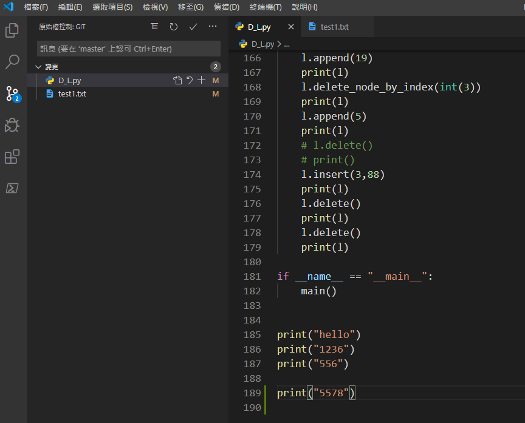
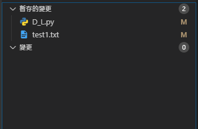
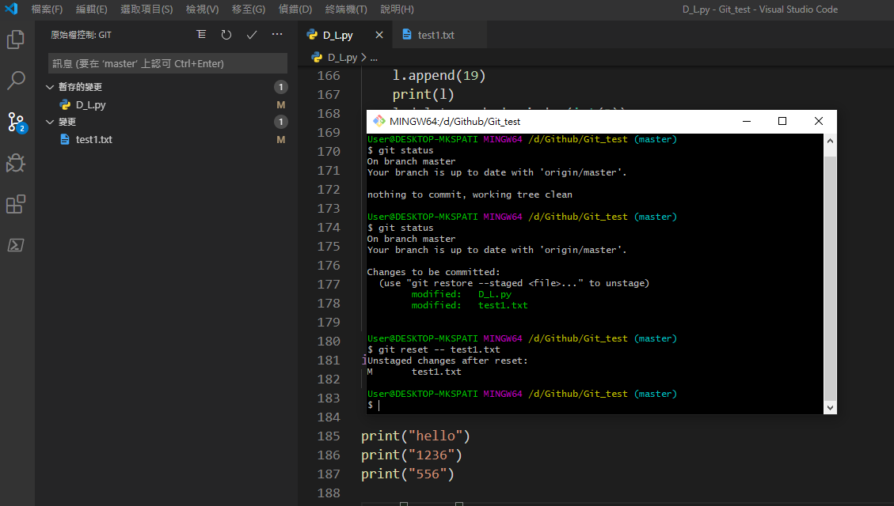
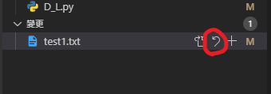
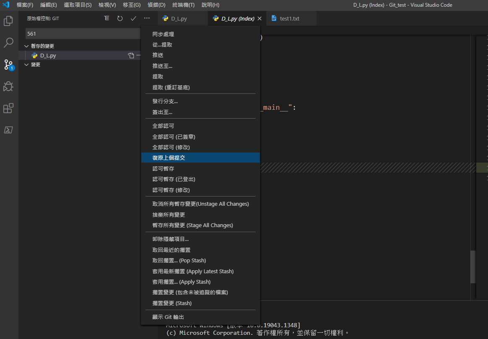
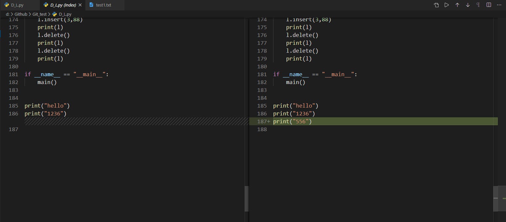
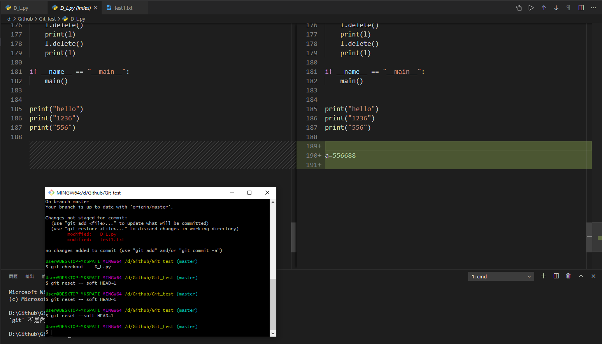

Git教學第二章:
上一頁講完了該怎麼建立我們的GitHub，以及Git Bash的操作指令，相同的指令也可以在我們的Vscode上操做。
那我們今天要補充的是git reset與git checkout。
git reset與git checkout:
首先先修改檔案，可以看到左邊的工具欄位，變更的項目，我們按下加號(等同於git add的意思)可以看到變成"暫存的變更"，等待commit。
當我們輸入git reset --test1.txt，可以又看到回到變更的欄位了。
那如果要從vscode刪除變更，我們只要按reset的按鍵就可以了，那如果是在Git Bash上超做的話，我們可以打git reset ，我們可以打git checkout --test1.txt，也有同樣的效果。
git有一個很方便的功能是，假如我們commit的內容錯了或是檔案加錯了，我們想要回到上一個commit，我們可以點選vscode上如下圖。
那如果是在Git Bash上可以打git reset --soft HEAD~1，後面的數字代表要往上找第幾個commit，2就代表前兩個commit。